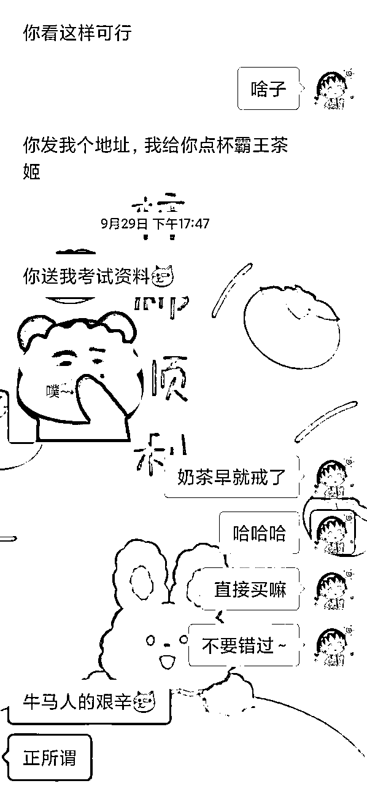

来源：https://avt9va2pkj4.feishu.cn/docx/Rf35dYa1WoakDwxzqP8cIKTvnvg
各位圈友好呀，我是今年七月五号加入生财的萌新稳稳，坐标：湖北宜昌。在9月航海中，第二次参加航海的我成功跑通0-1。
越分享越幸运，非常荣幸能够跟大家分享我的变现之旅。如果大家在做虚拟资料引流变现的过程中有遇到有跟我类似的问题，可以作为一个参考，希望我的分享能够给大家带来一点价值！
我的分享分为以下几部分：
在这次小红书引流-教育资料21天航海期间，我通过学习航海手册，直播间和航海群内教练指导，初步掌握了小红书引流变现的步骤，并成功跑通最小mvp。从9.27截止目前（10.16），纯销售资料（含题库），成功变现6907.76元。
这是我变现第一块钱以来的收入曲线。
航海期间我一共操作了四个小红书号，9月9日航海开始截止到9月 23 日，我做的是小学教辅资料（面向家长），使用两个账号发布了12篇笔记，引流到私域1人，变现了一份小学资料3元。成功跑通最小mvp。
9.24日开始发布银行考试笔记（用了另外两个号），发了18篇笔记，没有水花。9.26开始同步发布成考笔记（直接用的小学教辅的账号），一共发了 40+篇笔记，其中单篇笔记最高浏览量 6282。附图（其中一个成考账号部分数据）
从9.27日开始成交成考第一单，截止目前（10.16），成功引流到微信上488人，成交顾客 152人，成交转化率31%，GMV6904.76元。（贴图为部分收入）
首先不得不赘述一下我的第一次航海——视频号口播项目。我是在加入生财之前就知道视频号口播的项目，风刮得很大，我也想研究研究从而变现。
在视频号搜索到@郭晓文 老师，看他的直播回放，于是搜索到了他的公众号，进而使我发现了生财有术这个圈子，听了3天直播课，毫不犹豫的加入了。在这里要感谢老师，为我做了一个指引。
加入生财后就直接报了视频号口播航海，刚开始信心满满，但直到航海结束，也就变现了几块钱，还不是口播带货卖出去的，而是创作者分成。也就是说，这个项目到结束，我并没有跑通闭环，成功变现。
在航海结束后，我又继续坚持了大概半个月，我可以说经历了焦虑，恐慌，不安，自我怀疑等等的过程，我也尝试着去处理这些情绪，但是效果并不好。情绪会放大，事情也就做不好。由于看不到正反馈，我认为这个暂时不太适合我，于是我决定先停掉。
说实话那时候很迷茫，有极大的挫败感。觉得自己怎么干啥啥不行。这个时候我突然就想到了曾经看到的一句话，大意就是，每个人做成功之前都经历了很多个失败的项目，才摸索出自己的一套方法论。于是我想，这次我视频号航海没有跑通，那是不是意味着我离跑通一个项目更近了一步？
三人行必有我师，何况是生财航海实战这种高手云集的地方。我本来是个挺害羞的人，但是到航海快结束的时候，我也害怕错过了这次链接，错过跟优秀的老师圈友结识的机会。都说主动才会有故事，我也尝试去#举手 问问题，并在群内参与讨论，通过跟老师和群友的交流学习，我解决了很多困惑。
视频号航海中我们可以选择做读书号，由此引发了我读书的欲望。之前都是想要去读书，但由于自身原因，并未养成阅读的习惯。而正是因为这个契机，让我去想真正的去充实自己，也结识了对我带来极大影响的书籍——《认知觉醒》。
书中有一个很重要的观点，人要想知行合一，不断提升自己，做成一件事情，就需要去做这四步，清晰目标→专注行动→反馈反思→在拉伸取练习。
基于书中的这些观点，我也开始了自己的复盘之路。
在我看来，参加一次航海实战，不是说一定要把整个项目跑通闭环才算成功。而是要审视自己，看看参加这次航海，我有哪些做的好的地方，给我带来了什么？有哪些做的不好的地方，暴露了我的哪些问题？在后续工作学习生活中，我需要怎么去优化？
我尝试每天去复盘，刚开始的时候，自己制定的一些小计划目标大部分都做不到。但正如生财的这句话“把手弄脏”，我粗鄙的形容就是，做成一堆“狗屎”，再去优化。
做副业、项目是这样，做复盘也是如此。在坚持了一段时间后，奇妙地发现，自己竟然能完成大部分小目标。
越来越感觉自己的状态良好，也想在下一期航海大展拳脚。
视频号项目停止后，我继续去阅读，每天复盘，同时去生财看贴。说实话，里面项目太多了，使我眼花缭乱，当时的感受就如同那句话说的，“门外的繁华不是我的繁华”，看啥都赚钱，就是我自己赚不到钱。所以说做同样的项目，别人能赚钱而我不行，不是项目的问题，而是我自身的问题。
在看到贴子《全域虚拟电商实操手册·年赚百万项目的背后》深受启发，综合考虑，现阶段对于自身来说，这个项目看来是比较适合自己的，于是我决定上船！
航海开始后，我按照航海手册一步一步执行，在起步阶段我是沉寂了大概10天的时间，没有去发笔记。
我认真看了航海手册，真可谓是保姆级喂饭，但我自身很纠结于后端资料库的事情，认为资料库搭建和更新这一块我没有任何基础，这个问题卡了我大概一个星期，期间听了米杰教练的直播课很有启发，同时在群里教练们不断在强调，先动起来。9.19 我终于发布了第一条笔记。
发布几条笔记之后（已经准备了之一个基础资料库），我仍然很纠结后端搭建的问题。因为我发现很多爆款笔记的内容我的资料库是没有的，那我把他们引流过来，我该怎么成交呢？教练@希平 解答了我的疑虑，先不管有没有，先做。成交了见到钱了直接去买同行的。@Time 领队也给了我指引。
珍惜航海群的交流，善用#举手 提问。
刚开始我的笔记小眼睛都不高，有的甚至只有二三十个。我很焦虑。然后开始给自己做思想工作：
第一，这个事情是我想要做好的吗？答：是肯定的。
第二，这个事情到底适不适合我呢？答：没有适不适合，只有挣不挣钱。只要项目没问题，自己能挣到钱，怎么就不适合呢？都没有跑通整个项目，没有资格评判这些。
第三，现在的遇到了困境怎么办？答：找出问题根源，去解决。笔记没有水花的时候，要自检。前端的流量，无非就是作品质量和数量的问题。作品质量，无非就是封面、标题、内页内容、文字内容四个维度。数量无非就是发布时间和发布笔记数。去找出原因并解决，找不出的时候，就各项都去优化！然后就是坚持发。
想通之后，我又接着干。在 9.21成功引流了一个顾客到微信，并卖出第一份资料变现3元，成功跑通闭环。
在这篇笔记之后的第三篇，作品数据迎来了一个小爆发。每天都能收到点赞，小眼睛也到了1000+。（当时我已经转换赛道，所以没有过多留恋，但是账号我就直接养了几天，接着发考试的了。）
在这之后几天我一直在思考，既然已经跑通，我应该考虑这个事情我是否可以长期做，放大做。但做小学教辅不是我喜欢和擅长的，后期要放大对我来说也有难度。
期间在群里看到有圈友在群里报喜，于是请教了他，由此给我提供了一个新思路——做考试赛道。在添加同行做调研后，就去小红书搜了相关的内容。
看笔记数量，数量多说明体量大，看爆款笔记数据点赞和评论，数据好说明需求大。 结合自身实际考虑，有好几个朋友在做学历提升这块，做的还不错，说明能赚钱，并且后期可以合作。结合市场需求，自身经历，擅长和资源，我决定转战做各类考试。
航海手册有选择赛道详细步骤，有9~11月教育热点表（如下图），就按照航海手册的内容去落地实操。
关于资料这一块，很多人都在这块卡住，比如我。
操作办法航海手册都有。无非就三种方式，自己原创，和有产品的人或者机构合作，买资料（拼多多，闲鱼，淘宝，同行）＋公域搜索整理。能力原因，我选择后两者。
我是先准备一份资料在手上（相当于引流资料，可以低客单价成交，比如9.9，19.9），这样我心里有底。不担心玩意有顾客了着急忙慌找不到资料。然后再在做的过程中不断更新增加。
比如爆款对标作品中有一个资料我没有，不排除这个新资料也会为这个爆款加成，所以我会尝试去搜集（方法很多，最简单的就是买同行的，其次是拼多多闲鱼买，我经常是先在各个公域搜索，比如百度，比如公众号）。这样我的资料会更全面，比同行更有优势。
这种资料不用买太贵的，可以拼多多咸鱼买几份资料结合整理出来，这样就变成了自己的资料。资金有限的情况下，建议先做一个小范围的资料。
比如热门考试最近有很多，成考和自考都是，我该怎么选择？
我的选择是成考。一是考虑到资料搜集的复杂性，成考是全国统考，科目少，相对会简单很多。二是考虑到上手的容易程度，对于我们新手小白来讲，先跑通这个项目形成闭环是最重要的，如果一开始就做很复杂的事情，很容易把自己打倒。
我一共是4个账号。之前是效率低，没有流程化，一个号一天只能发1篇。到现在我一天可以发两篇。航海有提到，一个号一天3条笔记是没问题的。在忙的过来的情况下，多多益善。毕竟量变才有质变。
我的账号就是从小学赛道转到考试，刚开始转的时候，流量不怎么有，发了3~4篇后数据越来越好。
这个是个例，我并没有去统计过，因为我自己账号也不多。帐号有限的情况下（前提是账号没问题），为节省时间提高效率，不建议注销重来，可以直接这样操作。
之前在群里看教练们说，他们自己每天都发了很多笔记，教练和领队也经常在群里敦促我们，问问自己，今天有没有发够十篇笔记？
说实在话，这一条我至今没有做到，实在是惭愧。我也一直在摸索，问题出在两点，一是我想保证作品的质量，但又不想完全搬运。二是我的想法出现偏差（我认为他是爆款，那我就模仿他的所有），导致我连内页都在模仿制作，耗费了时间。
在此期间我作图速度太慢，无法做到批量制作，这使我极度困扰。我试过用ps去做图，但速度一直提不起来，后面尝试用手机醒图，发现醒图制作封面和内页都很方便，可以裁剪，可以使用混合模式，还可以标记等等，算是功能比较全面的软件了。
我一般是先找个背景边框放进醒图，然后把资料截图下来放到醒图，接着用正片叠底模式，这样就能与背景框融合到一起，最后加个标题，这样就相当于一张新的图片了。
用醒图熟练之后，我做图速度提高了很多，同时因为心理上不再纠结，效率大大提高。这里推荐给需要的圈友，不需要开通vip，基础功能足够用了。
9.24号发布第一条银行秋招考试的作品，两个账号每天一共发8篇，发了3天，引流了几个人，但没有成交。（可能是对这块很陌生，感觉做的很艰难。）
9.26 发布第一条成考作品，虽然浏览量不多，有顾客私信并成功引流到微信四个人，27日成交一单75元，看到了正反馈，这给了我很大的信心。后续就是每天坚持发作品，持续有成交。但是迟迟没有爆款。
很长一段时间里，我在做爆款笔记的筛选方面都感到眼花缭乱。认为个个都好，到自己制作的时候却不知道该选择哪一个。让自己选好之后再去发布的时候可能已经又过了很久了。
这一步我认为，找爆款必须要拥有决策力。说白了就是你要会抄作业，不能过于纠结。
刚开始可能是凭感觉，找最新最火的爆款，有一定网感之后就要尝试分析爆款封面图的文字自以及标题，现阶段这些用户都处于一个什么样的心理，这张封面图能调动他怎样的情绪？能激发他做出哪些动作？
举个栗子：上面这个封面图，大家应该很熟悉，爆款封面，表情＋文字，对于各个行业都是通用的，这里是成考，也可以是一年级期末考试，教资考试等等。同样表情也可以是喜悦的、愤怒的等。
揣摩受众心理：例如这段时间马上要考试了，心里肯定焦虑，那我的封面告诉他我胸有成竹，他肯定会点进去看，为什么他不急？他有什么妙招吗？
我认为通过揣摩用户心理，然后通过封面去展现你想表达的东西，也就是下钩子，来达到增加浏览量的目的。
也就是要尝试去筛选和分析爆款，并果断做出决策。决策完成后就要行动，去做出来自己的封面，快速发布。
同时应该逐渐形成自己的标题库和封面库，几乎所有的爆封面都是通用的，在自己熟练之后，也可以套用搜集的爆款模板，尝试自己原创新的爆款。
不断去熟悉作图的各种方式，我相信通过大量的练习就会有质的变化。
之前我都没有怎么做干货笔记，但想提高帐号权重，快速出爆款，干货笔记必不可少。
等自己可以熟练掌握技巧之后，利用杠杆的力量去做，几篇高质量笔记抵过几百篇低质量的，而不是一味地去用低质量搏概率。
笔记发布后，有的用户是在评论区求分享，有部分会发私信，这些私信的陌生人也不要错过（个人认为这部分用户需求更强烈，转化会更好）。
刚开始人比较少，我就发图片，轮换着发。后面笔记爆了，人太多了，我就直接拉群。
这里有个小技巧（在同行那学到的）：可以用小号去建群，然后大号直接分享群聊给用户（平均20min左右发5条条左右消息），群内利用群打卡或者投票的方式，这样也不用一直发引流消息。
踩坑提醒：切记大号不要去说其他话，他问你有偿吗？免费吗，是加微信吗这种问题，建议不予理会。大号做流量就可以了。
其实引流方法很多，就是一定一定不要做伤害主账号的动作。
如果木已成舟，就放宽心态，我有个号小爆了一篇笔记，后续流量就好了很多。但是前几天挂了（见上图），真的很心痛。我就一直安慰自己，不要紧不要紧，群里都说了很多次，账号是消耗品，能挣钱就行！我能做起来一个号，就一定能做起来第二个第三个！！于是我真的做起来了！（附图为某次笔记小爆了）
保护好账号确实很重要，但是平台抓你这事难说，所以最重要的是要训练自己把账号做起来的能力。
每天引流来的人都不一样，可能早上起来就能成交，可能一天下来，直到晚上才成交。之前大半天没有成交的时候我就很慌，不会是我的笔记流量又不行了吧，不会是我引来的顾客都是想白嫖的吧，是不是我话术有问题，让顾客感觉不舒服了所以不成交了吧？
不要内耗，不要怀疑，这是个概率问题。引流100个人将近20个人已经是在正常水平了。当达不到这个水平的时候就去自检。

比如我这个顾客（见上图）来问了价格之后，还在回复我的消息，我说几句之后，他就不回复消息了，我又抛出问题，他继续回复，我就会继续跟他聊。（询问他备考到哪个阶段了，遇到了什么问题等等）一般会继续回应的，很大概率可以成交。
朋友圈就是要做到真实感，是一个和顾客建立信任的环节。比如我有一条朋友圈分享自己的生活（见上图）一个顾客点赞了，紧接着就来询价，就成交了。

比如我这个顾客（见上图）是加过来，直说了来薅羊毛的，要免费的，一直在跟我聊天，还说让我把资料送给他，请我喝奶茶。直到我给他便宜了，才成交。成交之后我顿悟，原来不是想请我喝奶茶，而是想用一杯奶茶的价格买到资料！他是想讲价！
遇到问题不要害怕，更不要退缩，解决问题就好了。
十一期间到现在我每天越来越忙，但在做制作笔记跟引导私域去成交的环节越来越熟练。遇到五花八门的顾客，也越来越会应对。这得益于熟能生巧。大量的练习＋复盘优化，形成良性循环。
说心里话，做的过程是枯燥的，尤其是没有正反馈的时候，需要坚持。但其实也是有趣的。前期我把它当成任务，我觉得好难。但是做着做着我把这个事情当成了一种体验，同样的语言文字，每个人的回应都不一样，越与这些顾客打交道，越觉得好玩。
对于没有成交的客户，我在考前做了一个冲刺急救资料包的活动。一共群发280＋人，成交15余人。
成考马上就考试，我想，是不是可以把那些未成交的人再试着转化一下？同时，临近考试，很多人新顾客对这种便宜有用的产品没有免疫力，会毫不犹豫购买。
于是我的当天晚上就整理了网盘资料。本来准备第二天早上发的，后来想到晚上客户时间可能比较多，于是临时写好话术并群发。
截至目前，之前未成交的客户＋新加的客户，这个资料包一共售出39份。GMV500+。
避坑：建议在活动开始前把活动资料准备妥当。可以以网盘形式发送，时间紧的情况下，直接发pdf。（我当时资料还没有整理好，客户来咨询购买，导致我还在整理资料，手忙脚乱。）
航海手册真的是非常详细，所以，按照手册去做，不断去复盘，不断去优化，不断去行动。我们都一定可以！
最后，本次航海对我来说有两个非常重要的动作，在这里也分享给大家。
遇到问题解决问题，产生情绪很正常，避免让焦虑、不安、怀疑等情绪阻碍行动。不要觉得我不行，而是问问自己，为什么我不行？我是哪里做的有问题？找出原因，针对练习。
没有正反馈的时候，尝试用数据分析的方式去看待自己的动作，例如笔记没有爆，无非就是质量和数量两方面的问题，那就去分别优化！
在还没有跑通的时候，我也会焦虑，但我一看航海群，刚开始400＋人，有的圈友已经提前退出了（有了更好的选择），那我在小红书引流这个赛道上，是不是就已经击退了10%的人？
我在纠结后端资料库还没有发笔记的时候，刚好领队在建议大家发笔记，我就在想，如果这个时候我发笔记，是不是就能走到50%的圈友前面？这样来看，我跑通的几率会大大增加啊~
这条船上有很多非常厉害的大佬，我不是最优秀的，但我想我至少每一步都全力以赴，向优秀的人靠拢，每一刻都比之前的自己有进步，就足够了。
所以所以，先行动起来，先完成、再完善到完美，千万不要一直拖着不执行！先“把手弄脏”再说。
最后最后，感恩@郭晓文 老师的分享欲，让我有机会接触到生财这个平台！感谢生财航海提供这次机会，感谢教练@米杰 在航海即将开始的时候，给我的鼓励和希望！感恩航海期间各位教练大大、领队@Time 、志愿者@刘佳 以及各位圈友的付出、陪伴与分享。感谢@Time 、@澄歌协助我完成这次分享。
即使航海结束，希望大家也可以多多交流，在各自的大海上继续航行， 不断精进。一起加油一起冲~
让我们一起不断成长，生财有术。